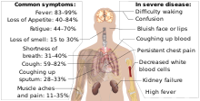

Coronavirus disease 2019
This article is about the disease. For the virus that causes it, see Severe acute respiratory syndrome coronavirus . For the pandemic it has caused, see COVID-19 pandemic.
"COVID" redirects here. For the group of diseases, see Coronavirus disease.
Coronavirus disease 2019 (COVID-19) is an infectious disease caused by severe acute respiratory syndrome coronavirus 2 (SARS-CoV-2). It was first identified in December 2019 in Wuhan, Hubei, China, and has resulted in an ongoing pandemic. The first confirmed case has been traced back to 17 November 2019 in Hubei.Traces of the virus have been found in wastewater that was collected from Milan and Turin, Italy, on 18 December 2019. As of 28 June 2020, more than 10 million cases have been reported across 188 countries and territories, resulting in more than 499,000 deaths. More than 5.06 million people have recovered.
Common symptoms include fever, cough, fatigue, shortness of breath, and loss of smell and taste.While the majority of cases result in mild symptoms, some progress to acute respiratory distress syndrome (ARDS) possibly precipitated by cytokine storm, multi-organ failure, septic shock, and blood clots.The time from exposure to onset of symptoms is typically around five days, but may range from two to fourteen days.
The virus is primarily spread between people during close contact,most often via small droplets produced by coughing,sneezing, and talking.The droplets usually fall to the ground or onto surfaces rather than travelling through air over long distances.However, research as of June 2020 has shown that speech-generated droplets may remain airborne for tens of minutes.Less commonly, people may become infected by touching a contaminated surface and then touching their face.It is most contagious during the first three days after the onset of symptoms, although spread is possible before symptoms appear, and from people who do not show symptoms.The standard method of diagnosis is by real-time reverse transcription polymerase chain reaction (rRT-PCR) from a nasopharyngeal swab.Chest CT imaging may also be helpful for diagnosis in individuals where there is a high suspicion of infection based on symptoms and risk factors; however, guidelines do not recommend using CT imaging for routine screening.
Recommended measures to prevent infection include frequent hand washing, maintaining physical distance from others (especially from those with symptoms), quarantine (especially for those with symptoms), covering coughs, and keeping unwashed hands away from the face.The use of cloth face coverings such as a scarf or a bandana has been recommended by health officials in public settings to minimise the risk of transmissions, with some authorities requiring their use.Health officials also stated that medical-grade face masks, such as N95 masks, should only be used by healthcare workers, first responders, and those who directly care for infected individuals.
There are no vaccines nor specific antiviral treatments for COVID-19.Management involves the treatment of symptoms, supportive care, isolation, and experimental measures.The World Health Organization (WHO) declared the COVID‑19 outbreak a public health emergency of international concern (PHEIC)[35][36] on 30 January 2020 and a pandemic on 11 March 2020.Local transmission of the disease has occurred in most countries across all six WHO regions.
Coronavirus disease 2019 (COVID-19)
Other name

Signs and symptoms
Transmission
Fever is the most common symptom of COVID-19, but is highly variable in severity and presentation, with some older, immunocompromised, or critically ill people not having fever at all. In one study, only 44% of people had fever when they presented to the hospital, while 89% went on to develop fever at some point during their hospitalization. A lack of fever does not verify someone is disease free.
Other common symptoms include cough, loss of appetite, fatigue, shortness of breath, sputum production, and muscle and joint pains.Symptoms such as nausea, vomiting, and diarrhoea have been observed in varying percentages.Less common symptoms include sneezing, runny nose, sore throat, and skin lesions.Some cases in China initially presented with only chest tightness and palpitations.A decreased sense of smell or disturbances in taste may occur.Loss of smell was a presenting symptom in 30% of confirmed cases in South Korea.
As is common with infections, there is a delay between the moment a person is first infected and the time he or she develops symptoms. This is called the incubation period. The typical incubation period for COVID‑19 is five or six days, but it can range from one to fourteen days,with approximately ten percent of cases taking longer.
An early key to the diagnosis is the tempo of the illness. Early symptoms may include a wide variety of symptoms but infrequently involves shortness of breath. Shortness of breath usually develops several days after initial symptoms. Shortness of breath that begins immediately along with fever and cough is more likely to be anxiety than COVID-19. The most critical days of illness tend to be those following the development of shortness of breath.
A minority of cases do not develop noticeable symptoms at any point in time.[56] These asymptomatic carriers tend not to get tested, and their role in transmission is not fully known.Preliminary evidence suggested they may contribute to the spread of the disease.In June 2020, a spokeswoman of WHO said that asymptomatic transmission appears to be "rare," but the evidence for the claim was not released.The next day, WHO clarified that they had intended a narrow definition of "asymptomatic" that did not include pre-symptomatic or paucisymptomatic (weak symptoms) transmission and that up to 41% of transmission may be asymptomatic. Transmission without symptoms does occur.
Symptoms of COVID-19
| Symptom | Range |
| Fever | 83–99% |
| Cough | 59–82% |
| Loss of appetite | 40–84% |
| Fatigue | 44–70% |
| Shortness of breath | 31–40% |
| Coughing up sputum | 28–33% |
| Muscle aches and pains | 11–35% |

Symptoms of COVID-19.
Complications
Complications may include pneumonia, acute respiratory distress syndrome (ARDS), multi-organ failure, septic shock, and death.Cardiovascular complications may include heart failure, arrhythmias, heart inflammation, and blood clots.
A study published in The New England Journal of Medicine concluded that "the risk for severe COVID-19 was 45% higher for people with type A blood than those with other blood types."
Approximately 20-30% of people who present with COVID‑19 have elevated liver enzymes reflecting liver injury.
Neurologic manifestations include seizure, stroke, encephalitis, and Guillain–Barré syndrome (which includes loss of motor functions).[68] Following the infection, children may develop paediatric multisystem inflammatory syndrome, which has symptoms similar to Kawasaki disease, which can be fatal.
Cause
Transmission
COVID-19 spreads primarily when people are in close contact and one person inhales small droplets produced by an infected person (symptomatic or not) coughing, sneezing, talking, or singing.The WHO recommends 1 metre (3 ft) of social distance;the U.S. CDC recommends 2 metres (6 ft).People can transmit the virus without showing symptoms, but it is unclear how often this happens.One estimate of the number of those infected who are asymptomatic is 40%.
People are most infectious when they show symptoms (even mild or non-specific symptoms), but may be infectious for up to two days before symptoms appear (pre-symptomatic transmission).They remain infectious an estimated seven to twelve days in moderate cases and an average of two weeks in severe cases.
When the contaminated droplets fall to floors or surfaces they can, though less commonly, remain infectious if people touch contaminated surfaces and then their eyes, nose or mouth with unwashed hands.On surfaces the amount of active virus decreases over time until it can no longer cause infection,and surfaces are thought not to be the main way the virus spreads.It is unknown what amount of virus on surfaces is required to cause infection via this method, but it can be detected for up to four hours on copper, up to one day on cardboard, and up to three days on plastic (polypropylene) and stainless steel (AISI 304).
Surfaces are easily decontaminated with household disinfectants which kill the virus outside the human body or on the hands.Disinfectants or bleach are not a treatment for COVID‑19, and cause health problems when not used properly, such as when used inside the human body.

Respiratory droplets produced
when a man sneezes, visualised
using Tyndall scattering
COVID‑19 is a new disease, and many of the details of its spread are still under investigation.It spreads easily between people—easier than influenza but not as easily as measles.Estimates of the number of people infected by one person with COVID-19 (the R0) have varied widely. The WHO's initial estimates of the R0 were 1.4-2.5 (average 1.95), however a more recent[when?] review found the basic R0 (without control measures) to be higher at 3.28 and the median R0 to be 2.79.
The virus may occur in breast milk, but it's unknown whether it's infectious and transmittable to the baby.
Virology
Main article: Severe acute respiratory syndrome coronavirus 2
Severe acute respiratory syndrome coronavirus 2 (SARS-CoV-2) is a novel severe acute respiratory syndrome coronavirus, first isolated from three people with pneumonia connected to the cluster of acute respiratory illness cases in Wuhan.All features of the novel SARS-CoV-2 virus occur in related coronaviruses in nature.Outside the human body, the virus is killed by household soap, which bursts its protective bubble.
SARS-CoV-2 is closely related to the original SARS-CoV.[85] It is thought to have an animal (zoonotic) origin. Genetic analysis has revealed that the coronavirus genetically clusters with the genus Betacoronavirus, in subgenus Sarbecovirus (lineage B) together with two bat-derived strains. It is 96% identical at the whole genome level to other bat coronavirus samples (BatCov RaTG13).In February 2020, Chinese researchers found that there is only one amino acid difference in the binding domain of the S protein between the coronaviruses from pangolins and those from humans; however, whole-genome comparison to date[when?] found that at most 92% of genetic material was shared between pangolin coronavirus and SARS-CoV-2, which is insufficient to prove pangolins to be the intermediate host.
|  |
| Illustration of SARSr-CoV virion |


Case fatality rates (%) by age and country
| Age | ||||||||||
| Country | 0–9 | 10–19 | 20-29 | 30-39 | 40-49 | 50-59 | 60-69 | 70-79 | 80-89 | 90+ |
| Argentina as of 7 May | 0.0 | 0.0 | 0.1 | 0.4 | 1.3 | 3.6 | 12.9 | 18.8 | 28.4 | |
| Australia as of 4 June | 0.0 | 0.0 | 0.0 | 0.0 | 0.1 | 0.2 | 1.1 | 4.1 | 18.1 | 40.8 |
| Canada as of 3 June | 0.0 | 0.1 | 0.7 | 11.2 | 30.7 | |||||
| Alberta as of 3 June | 0.0 | 0.0 | 0.1 | 0.1 | 0.1 | 0.2 | 1.9 | 11.9 | 30.8 | |
| Br. Columbia as of 2 June | 0.0 | 0.0 | 0.0 | 0.0 | 0.5 | 0.8 | 4.6 | 12.3 | 33.8 | 33.6 |
| Ontario as of 3 June | 0.0 | 0.0 | 0.1 | 0.2 | 0.5 | 1.5 | 5.6 | 17.7 | 26.0 | 33.3 |
| Quebec as of 2 June | 0.0 | 0.1 | 0.1 | 0.2 | 1.1 | 6.1 | 21.4 | 21.4 | 30.4 | 36.1 |
| Chile as of 31 May | 0.1 | 0.3 | 0.7 | 2.3 | 7.7 | 15.6 | ||||
| Quebec as of 2 June | 0.0 | 0.1 | 0.1 | 0.2 | 1.1 | 6.1 | 21.4 | 21.4 | 30.4 | |
| China as of 11 February | 0.0 | 0.2 | 0.2 | 0.2 | 0.4 | 1.3 | 3.6 | 8.0 | 14.8 | |
History
The virus is thought to be natural and has an animal origin,through spillover infection.The first known human infections were in China. A study of the first 41 cases of confirmed COVID‑19, published in January 2020 in The Lancet, reported the earliest date of onset of symptoms as 1 December 2019.Official publications from the WHO reported the earliest onset of symptoms as 8 December 2019.Human-to-human transmission was confirmed by the WHO and Chinese authorities by 20 January 2020.According to official Chinese sources, these were mostly linked to the Huanan Seafood Wholesale Market, which also sold live animals.In May 2020, George Gao, the director of the Chinese Center for Disease Control and Prevention, said animal samples collected from the seafood market had tested negative for the virus, indicating that the market was the site of an early superspreading event, but it was not the site of the initial outbreak.
There are several theories about where the very first case (the so-called patient zero) originated.According to an unpublicised report from the Chinese government, the first case can be traced back to 17 November 2019; the person was a 55-year old citizen in the Hubei province. There were four men and five women reported to be infected in November, but none of them were "patient zero".By December 2019, the spread of infection was almost entirely driven by human-to-human transmission.The number of coronavirus cases in Hubei gradually increased, reaching 60 by 20 Decemberand at least 266 by 31 December.On 24 December, Wuhan Central Hospital sent a bronchoalveolar lavage fluid (BAL) sample from an unresolved clinical case to sequencing company Vision Medicals. On 27 and 28 December, Vision Medicals informed the Wuhan Central Hospital and the Chinese CDC of the results of the test, showing a new coronavirus.A pneumonia cluster of unknown cause was observed on 26 December and treated by the doctor Zhang Jixian in Hubei Provincial Hospital, who informed the Wuhan Jianghan CDC on 27 December.[241] On 30 December, a test report addressed to Wuhan Central Hospital, from company CapitalBio Medlab, stated an erroneous positive result for SARS, causing a group of doctors at Wuhan Central Hospital to alert their colleagues and relevant hospital authorities of the result. That evening, the Wuhan Municipal Health Commission issued a notice to various medical institutions on "the treatment of pneumonia of unknown cause".Eight of these doctors, including Li Wenliang (punished on 3 January),were later admonished by the police for spreading false rumours, and another, Ai Fen, was reprimanded by her superiors for raising the alarm.
The Wuhan Municipal Health Commission made the first public announcement of a pneumonia outbreak of unknown cause on 31 December, confirming 27 cases—enough to trigger an investigation.
Central helpline Number for corona-virus:- +91-11-23978046
Helpline Number of states&Union Territories(UTs)
| S.No | Name of the State | Helpline Nos |
| 1 | Andhra Pradesh | 0866-2410978 |
| 2 | Arunachal Pradesh | 9436055743 |
| 3 | Assam | 6913347770 |
| 4 | Bihar | |
| 5 |